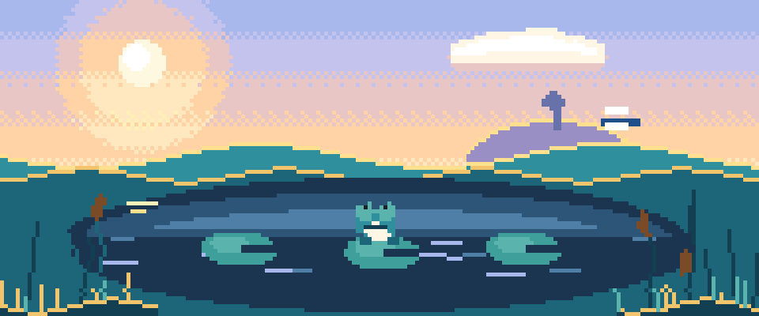
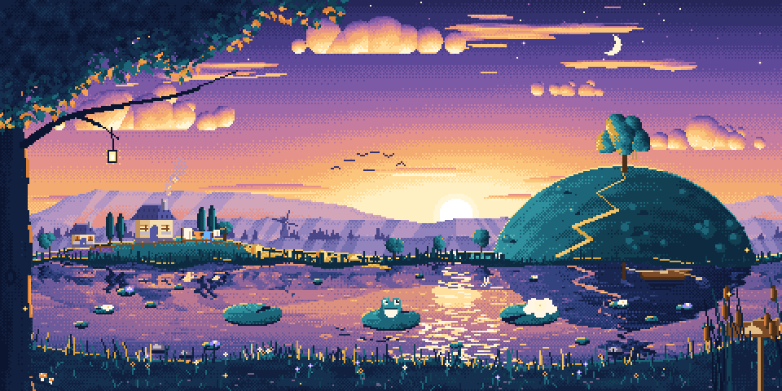
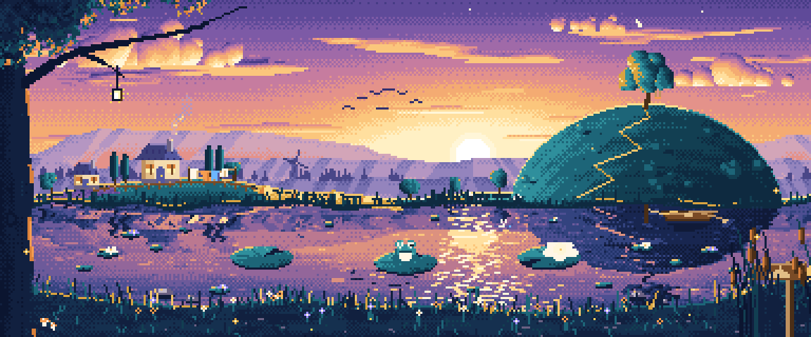
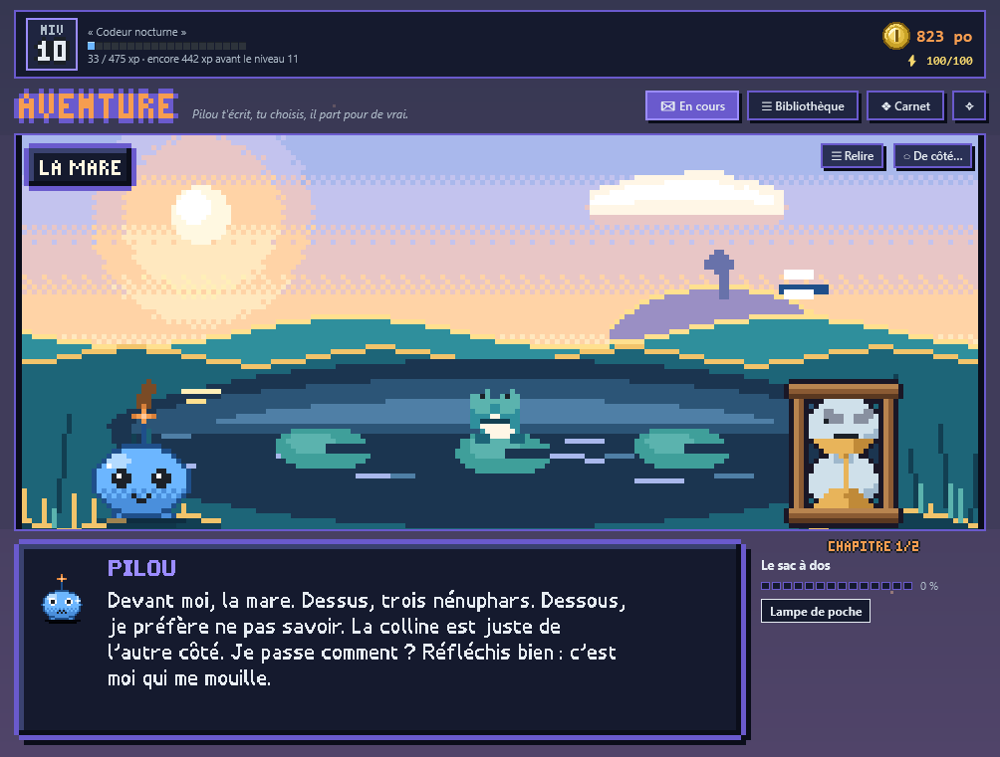
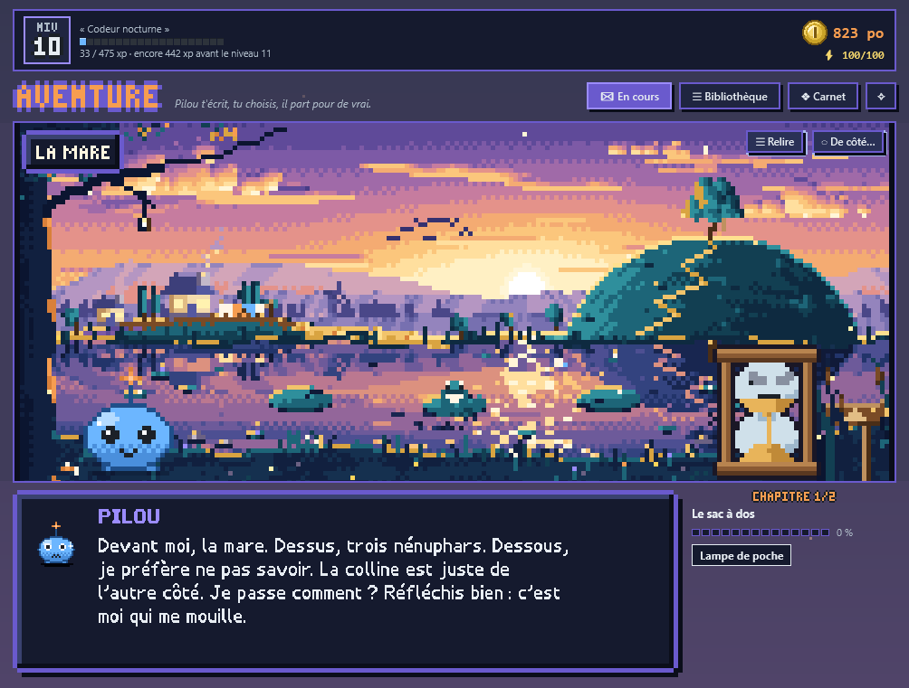
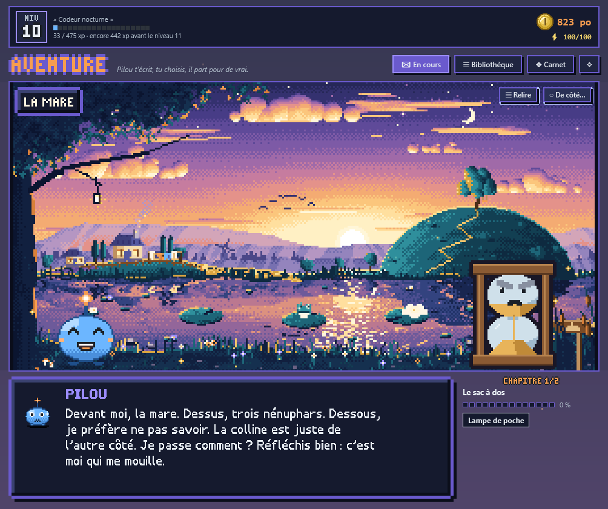
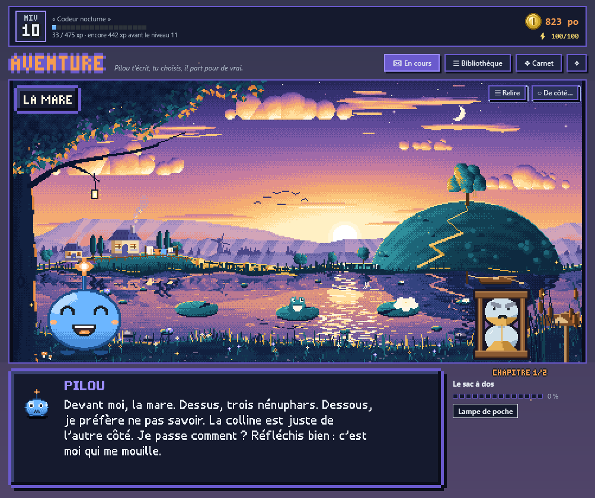
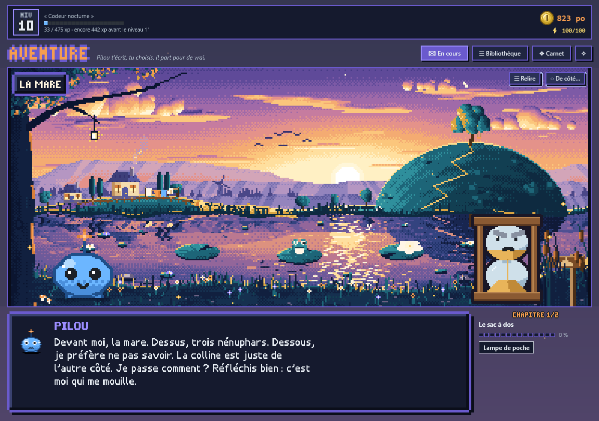

Paysages des campagnes : la mare au couchant, en quatre définitions
Étude du 28 novembre 2026. Un seul paysage (la mare du prologue), peint par le code de
outils/sprites/paysages_etude.py dans quatre directions, à côté du décor en service. Toutes les images
sont à leur taille d'écran réelle et sans lissage. Le détail chiffré est dans
ETUDE.md.
0Actuel : 192 × 80 unités, 5 px par unité.
AMême définition, enrichie : 192 × 80 unités, 5 px par unité.
BHaute définition : 320 × 160 unités, 3 px par unité.
CTrès haute définition : 480 × 240 unités, 2 px par unité.
DLe double exact de l'actuel : 384 × 160 unités, 3 px par unité, 1152 px de large. Recommandée.
1. Les quatre, côte à côte (réduits de moitié)
Vue d'ensemble seulement : à cette taille le navigateur réduit les images. Pour juger le pixel, descendre à la section 2.



2. Chaque décor à sa taille d'écran, en boucle
Huit images à 5 images par seconde (l'actuel : six images). Ce qui bouge : étoiles, nuages, oiseaux, moulin, fumée, fenêtres, linge, balançoire, mouton, reflets et éclats du soleil, ronds dans l'eau, grenouille, barque, libellule, nénuphars, herbes, feuilles, lanterne, roseaux, lucioles.
0Actuel — 960 × 400 px
AMême définition, enrichie — 960 × 400 px
BHaute définition — 960 × 480 px
CTrès haute définition — 960 × 480 px
DDouble exact de l'actuel — 1152 × 480 px (le téléphone de 1078 px en montre le milieu)
3. Parallaxe légère
La caméra glisse de ± 3 unités ; chaque plan suit à sa vitesse (ciel 0, nuages 0,08, lointains 0,2, plan moyen 0,5, premier plan 1). C'est une démonstration : le théâtre actuel n'a pas de plans séparés.
A
B
C
D
4. La fenêtre Aventure du PC, à 100 %
Gabarit : capture réelle de la fenêtre. Pilou et le personnage (Grumeau, emprunté à « La Grande Panne ») sont à l'unité de chaque direction. En B, C et D la scène gagne 80 px de haut : la fenêtre s'allonge d'autant. En D elle s'élargit aussi de 192 px (le gabarit est étiré dans ses zones vides).
0Actuel

AMini-Pilou et personnage en pied d'aujourd'hui, inchangés

BLe Pilou du bureau (48 × 56) et le portrait fin du personnage, déjà dessinés

CLe Pilou fin (96 × 112) ; le personnage n'existe pas à cette unité, il est trop petit

DLe mini-Pilou de scène doublé automatiquement (anguleux : à affiner) et le portrait fin du personnage

5. L'écran Aventure du téléphone (1078 × 2400, montré à moitié)
Gabarit : capture Robolectric du même écran (1236 × 2745) ramenée à 1078 de large ; son habillage est donc un peu adouci, et son texte est celui du gabarit (« Devant la porte »). La scène, elle, est au pixel près. En D elle est cadrée : 37 px (12 unités) perdus de chaque côté. Cliquer une image pour la voir en entier.


6. Ce que chaque direction impose
| 0Actuel | A192 × 80 | B320 × 160 | C480 × 240 | D384 × 160 | |
|---|---|---|---|---|---|
| Rapport à l'actuel | — | × 1 | × 5/3, autre cadre (2:1) | × 2,5, autre cadre (2:1) | × 2 exact, même cadre |
| Pixels par image | 15 360 | 15 360 | 51 200 (× 3,3) | 115 200 (× 7,5) | 61 440 (× 4) |
| Poids du décor (texte, mesuré) | 94 Ko, 6 images | 121 Ko, 8 images | 401 Ko | 902 Ko | 481 Ko |
| 46 décors (extrapolé) | 4,3 Mo | ≈ 5,6 Mo | ≈ 18 Mo | ≈ 41 Mo | ≈ 22 Mo |
| Pilou de scène (92 poses) | en service | inchangé | à redessiner | à redessiner | doublé automatiquement ; anguleux, à affiner ensuite |
| 29 personnages en pied | 13 faits, 16 à dessiner | inchangé | 29 à redessiner | 29 à redessiner | 13 : le portrait fin 64 × 64 sert tel quel ; 16 à dessiner (déjà prévus) |
| 17 acteurs (bêtes, effets) | en service | inchangés | à redessiner | à redessiner | doublés automatiquement |
| Scènes (places, sols, zones) | — | inchangées | à replacer à l'œil | à replacer à l'œil | coordonnées doublées |
| Code PC et Android | — | aucun | taille, constantes de mouvement (× 5/3, non entier), référence, tests | idem, plus un format plus compact | taille et constantes × 2, référence, tests ; un cadrage sur téléphone |
| Téléphone 1078 px | 960 px, marges | 960 px, marges | 960 px, marges | 960 px, marges | pleine largeur, 12 unités coupées par bord |
| Téléphone 720 px | 3 px, 576 px | 3 px, 576 px | 2 px, 640 px | 1 px, 480 px : trop petit | 2 px, pleine largeur, 12 unités coupées par bord |
| Fenêtre du PC | — | inchangée | + 80 px de haut | + 80 px de haut | + 80 px de haut, + 192 px de large (ou cadrée) |
| Effet « waouh » | faible | moyen : plus riche, mais brouillé | fort ; le cadre haut donne le plus grand ciel | très fort, à peine au-dessus de B | fort ; plus fin que B, plus grand à l'écran |
| Temps estimé (sessions) | — | 5 à 7 | 14 à 19 | 18 à 25 | 9 à 13 |
7. Recommandation
Direction D (384 × 160 à 3 px, le double exact de l'actuel). Confiance : 70 %.
- À l'écran, le pixel est le même qu'en B (3 px) et le dessin est plus fin (2 unités par unité actuelle contre 1,67).
- Tout ce qui existe se convertit par × 2 : scènes, mouvements, acteurs, Pilou de scène, 13 personnages. En B et C, tout cela est à refaire.
- Sur téléphone la scène prend toute la largeur (1078 px au lieu de 960).
- Ce qu'on perd face à B : le cadre plus haut (2:1) et son très grand ciel. Le cadre reste celui d'aujourd'hui (2,4:1).
- C reste trop cher pour ce qu'il ajoute ; A ne porte pas le fourmillement demandé.
Rien de ceci n'a tourné dans l'application : ce sont des images produites par l'outil d'étude. La fluidité à 384 × 160 (quatre fois plus de pixels à composer qu'aujourd'hui) sur un vrai téléphone reste à mesurer avant de lancer la refonte.